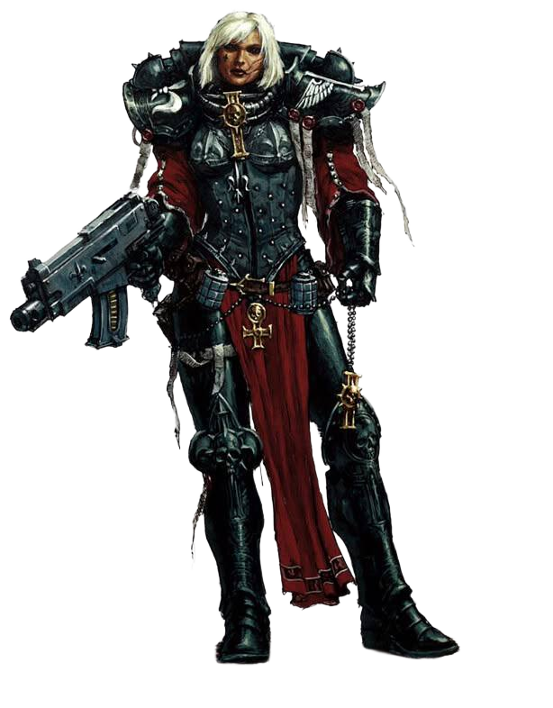

ADEPTA SORORITAS
Faction Mission:
Conduct the evacuation of the relics of the Saints.
One Infantry at the end of Movement Phase - choose one Ruine at No Man's Land or Opponent Deployment.
Conditions:
* You must stay holy whithin a Ruine with all models.
* Roll 3D6 on 4+.
* If you resolve two Success - 1 point of the relics.
Restriction:
None.
Rewards:
If you earned 3 points:
* 3 points of the relics: at the start of the Battle you can choose one additional Primary Mission openly for your army.
